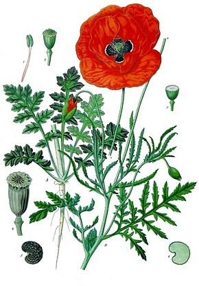
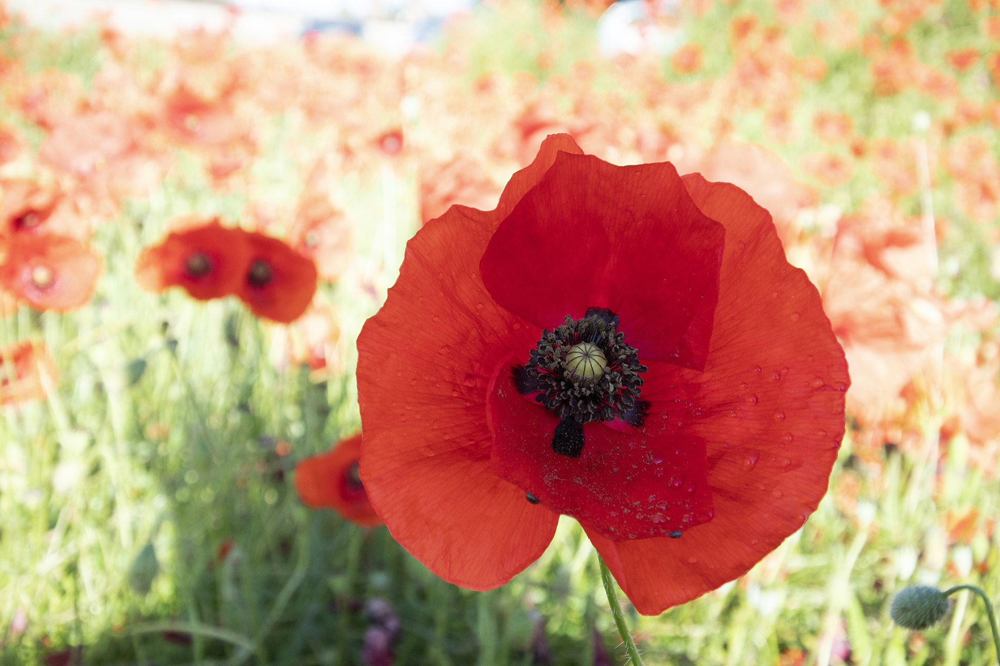
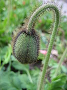
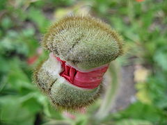
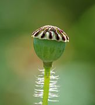
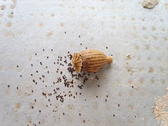
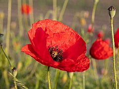
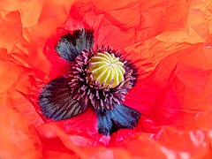

C'est une plante herbacée annuelle, très abondante dans les terrains fraîchement remués à partir du printemps, qui se distingue par la couleur rouge de ses fleurs et par le fait qu'elle forme souvent de grands tapis colorés visibles de très loin. Elle appartient au groupe des plantes dites messicoles car elle est associée à l'agriculture depuis des temps très anciens, grâce à son cycle biologique adapté aux cultures de céréales, la floraison et la mise à graines intervenant avant la moisson. Très commune dans différents pays d'Europe, elle a beaucoup régressé du fait de l'emploi généralisé des herbicides et de l'amélioration du tri des semences de céréales.
|  |
|
 |
Le nom scientifique du genre Papaver est issu d'une racine indo-européenne papa signifiant « bouillie », car il était courant de cuire ainsi les graines de pavot. L'épithète spécifique rhoeas vient du grec ῥοιάς / rhoiás, « écoulement » (étymologie qu'on retrouve dans le terme « rhume »), allusion au latex coulant lorsque la tige est blessée1. D'abord écrit coquelicoq (1545), son nom vernaculaire est une variante de l'ancien français coquerico, désignant le coq par onomatopée : il s'agit d'une métaphore entre la couleur de la fleur et celle de la crête du coq.
|

Bouton floral : |

Bouton floral en cours d'éclosion : |

Capsule avant maturité : |

Capsule de coquelicot laissant échapper ses graines : |

Autre fleur épanouie sur le bord d'un champ en Allemagne : |

L'intérieur d'une fleur de coquelicot : |
Dans le langage des fleurs, le coquelicot incarnerait « l'ardeur fragile »30, la beauté31 ou « la consolation »32. Les noces de coquelicot symbolisent les 8 ans de mariage dans le folklore français. Le coquelicot a été associé, au xxe siècle, en particulier dans les pays du Commonwealth (Royaume-Uni, Canada, Australie, Nouvelle-Zélande…), au souvenir des combattants, et tout spécialement des soldats tombés lors de la Première Guerre mondiale33, à l'instar du bleuet pour les combattants français. Cette allégorie du coquelicot découle d'un poème, écrit le 3 mai 1915 par le lieutenant-colonel John McCrae, un médecin du Corps de santé royal canadien qui fut témoin de la terrible seconde bataille d'Ypres34. Il s'intitule In Flanders Fields (Dans les champs de Flandres). En fait, les coquelicots fleurissaient sur le bord des tranchées et sur les tombes des soldats (phénomènes remarqués dès les guerres napoléoniennes)35, et leur couleur rouge était un symbole approprié pour le bain de sang de la guerre de tranchées. En 1918, Moina Michael, universitaire membre de la YWCA, découvre ce poème et promeut l'usage des coquelicots comme symbole de mémoire. Cette pratique est adoptée par l'American Legion en 1920 lors d'un congrès auquel participe Anna E. Guerin, membre du YMCA en France, qui propose de vendre, à l'occasion de l'anniversaire de l'Armistice, des coquelicots en tissus faits à la main, afin de recueillir de l'argent pour les orphelins de guerre. En 1921, une délégation de veuves françaises rend visite au maréchal britannique Douglas Haig, fondateur de la Royal British Legion, et le convainc de vendre ces coquelicots pour amasser des fonds pour les anciens combattants blessés et au chômage34. Dès 1922, les divers pays qui ont adopté ce symbole entreprennent de fabriquer les coquelicots en papier chez eux. La tradition se poursuit depuis de vendre ces fleurs le jour du Souvenir36. Le coquelicot est le symbole de Morphée le dieu des rêves et du sommeil dans la mythologie gréco-latine.